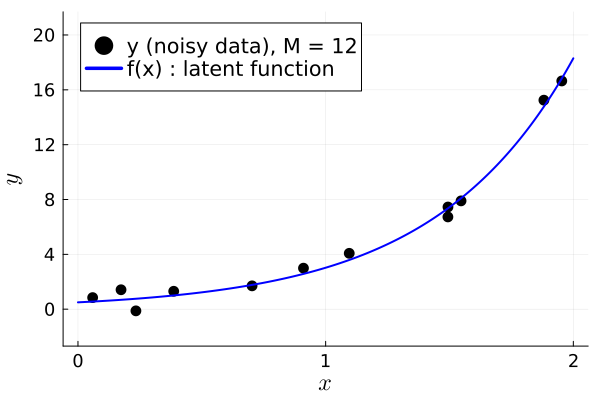
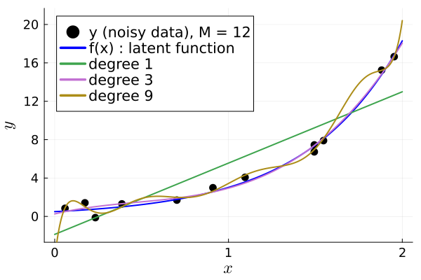
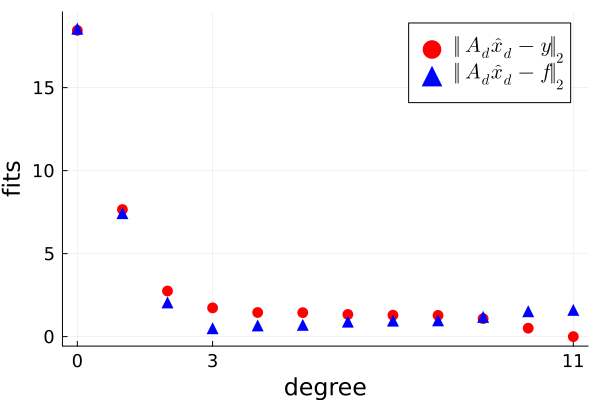
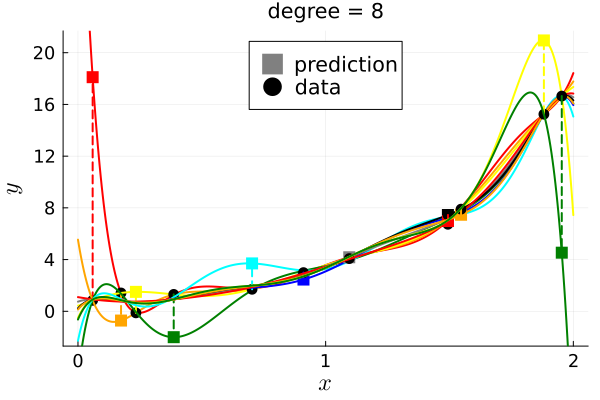
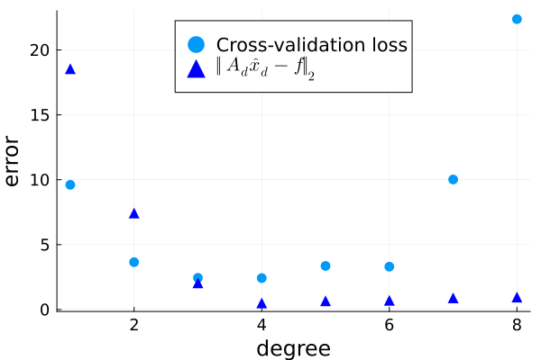

LS fitting with cross validation
This example illustrates least squares (LS) polynomial fitting, with cross validation for selecting the polynomial degree, using the Julia language.
This page comes from a single Julia file: ls-cv.jl.
You can access the source code for such Julia documentation using the 'Edit on GitHub' link in the top right. You can view the corresponding notebook in nbviewer here: ls-cv.ipynb, or open it in binder here: ls-cv.ipynb.
Setup
Add the Julia packages used in this demo. Change false to true in the following code block if you are using any of the following packages for the first time.
if false
import Pkg
Pkg.add([
"InteractiveUtils"
"LaTeXStrings"
"MIRTjim"
"Plots"
"Polynomials"
"Random"
])
endTell Julia to use the following packages. Run Pkg.add() in the preceding code block first, if needed.
using InteractiveUtils: versioninfo
using LaTeXStrings
using MIRTjim: prompt
using Plots: default, plot, plot!, scatter, scatter!, savefig
using Polynomials: fit
using Random: seed!
default(); default(label="", markerstrokecolor=:auto, widen=true, linewidth=2,
markersize = 6, tickfontsize=12, labelfontsize = 16, legendfontsize=14)The following line is helpful when running this jl-file as a script; this way it will prompt user to hit a key after each image is displayed.
isinteractive() && prompt(:prompt);Simulated data from latent nonlinear function
f(x) = 0.5 * exp(1.8 * x) # nonlinear function
seed!(0) # seed rng
M = 12 # how many data points
xm = sort(2*rand(M)) # M random sample locations
z = 0.5 * randn(M) # noise
y = f.(xm) + z # noisy samples
x0 = range(0, 2, 501) # fine sampling for showing curve
xaxis = (L"x", (0,2), 0:2)
yaxis = (L"y", (-2, 21), 0:4:20)
p0 = scatter(xm, y, color=:black, label="y (noisy data), M = $M"; xaxis, yaxis)
plot!(x0, f.(x0), color=:blue, label="f(x) : latent function", legend=:topleft)
prompt()
# savefig(p0, "ls-cv-data.pdf")Polynomial fitting
p1 = deepcopy(p0)
degs = [1, 3, 9]
for deg in degs
pol = fit(xm, y, deg)
plot!(p1, x0, pol.(x0), label = "degree $deg")
end
p1
prompt()
# savefig(p1, "ls-cv-fits.pdf")Over-fitting to noisy data
degs = 0:(M-1)
fits = zeros(length(degs))
accs = zeros(length(degs))
for (id, deg) in enumerate(degs)
pol = fit(xm, y, deg)
fits[id] = sqrt(sum(abs2, pol.(xm) - y))
accs[id] = sqrt(sum(abs2, pol.(xm) - f.(xm)))
end
pf = scatter(degs, fits; color=:red,
xaxis = ("degree", extrema(degs), [0,3,11]),
yaxis = ("fits", (0,19), ),
label = (L"‖ A_d \hat{x}_d - y ‖_2"),
)
scatter!(degs, accs;
label = L"‖ A_d \hat{x}_d - f ‖_2", marker=:uptri, color=:blue)
prompt()
# savefig(pf, "ls-cv-over.pdf")Illustrate uncertainty
colors = [:red, :orange, :yellow, :green, :cyan, :blue, :grey, :black]
pols = Vector{Any}(undef, M)
deg1 = 8
p2 = plot(; xaxis, yaxis, title = "degree = $deg1",
legend=:top)
scatter!(p2, [-9], [-9]; marker=:square, color=:gray, label="prediction")
scatter!(p2, [-9], [-9]; marker=:circle, color=:black, label="data")
for m in 1:M
mm = (1:M)[[1:(m-1); (m+1):M]]
pols[m] = fit(xm[mm], y[mm], deg1)
color = colors[mod1(m, length(colors))]
plot!(p2, x0, pols[m].(x0); xaxis, yaxis, title = "degree = $deg1",
color,
)
pred = pols[m](xm[m])
scatter!([xm[m]], [pred]; color, marker=:square)
scatter!([xm[m]], [y[m]]; color=:black)
plot!([1, 1]*xm[m], [y[m], pred]; color, line=:dash)
end
p2
prompt()
# savefig(p2, "ls-cv-uq.pdf")Cross validation (leave-one-out)
degs = 1:8
errs = zeros(length(degs), M)
for (id, deg) in enumerate(degs)
for m in 1:M
mm = (1:M)[[1:(m-1); (m+1):M]]
pol = fit(xm[mm], y[mm], deg)
errs[id, m] = pol(xm[m]) - y[m]
end
end
tmp = sqrt.(sum(abs2, errs, dims=2))
p3 = scatter(degs, tmp; legend = :top,
xlabel = "degree",
ylabel = "error",
label = "Cross-validation loss",
)
scatter!(p3, degs, accs;
label = L"‖ A_d \hat{x}_d - f ‖_2", marker=:uptri, color=:blue)
prompt()
# savefig(p3, "ls-cv-scat.pdf")Reproducibility
This page was generated with the following version of Julia:
using InteractiveUtils: versioninfo
io = IOBuffer(); versioninfo(io); split(String(take!(io)), '\n')11-element Vector{SubString{String}}:
"Julia Version 1.11.1"
"Commit 8f5b7ca12ad (2024-10-16 10:53 UTC)"
"Build Info:"
" Official https://julialang.org/ release"
"Platform Info:"
" OS: Linux (x86_64-linux-gnu)"
" CPU: 4 × AMD EPYC 7763 64-Core Processor"
" WORD_SIZE: 64"
" LLVM: libLLVM-16.0.6 (ORCJIT, znver3)"
"Threads: 1 default, 0 interactive, 1 GC (on 4 virtual cores)"
""And with the following package versions
import Pkg; Pkg.status()Status `~/work/book-la-demo/book-la-demo/docs/Project.toml`
[6e4b80f9] BenchmarkTools v1.5.0
[aaaa29a8] Clustering v0.15.7
[35d6a980] ColorSchemes v3.27.1
⌅ [3da002f7] ColorTypes v0.11.5
⌃ [c3611d14] ColorVectorSpace v0.10.0
[717857b8] DSP v0.7.10
[72c85766] Demos v0.1.0 `~/work/book-la-demo/book-la-demo`
[e30172f5] Documenter v1.7.0
[4f61f5a4] FFTViews v0.3.2
[7a1cc6ca] FFTW v1.8.0
[587475ba] Flux v0.14.25
[a09fc81d] ImageCore v0.10.4
[71a99df6] ImagePhantoms v0.8.1
[b964fa9f] LaTeXStrings v1.4.0
[7031d0ef] LazyGrids v1.0.0
[599c1a8e] LinearMapsAA v0.12.0
[98b081ad] Literate v2.20.1
[7035ae7a] MIRT v0.18.2
[170b2178] MIRTjim v0.25.0
[eb30cadb] MLDatasets v0.7.18
[efe261a4] NFFT v0.13.5
[6ef6ca0d] NMF v1.0.3
[15e1cf62] NPZ v0.4.3
[0b1bfda6] OneHotArrays v0.2.5
[429524aa] Optim v1.10.0
[91a5bcdd] Plots v1.40.9
[f27b6e38] Polynomials v4.0.11
[2913bbd2] StatsBase v0.34.3
[d6d074c3] VideoIO v1.1.0
[b77e0a4c] InteractiveUtils v1.11.0
[37e2e46d] LinearAlgebra v1.11.0
[44cfe95a] Pkg v1.11.0
[9a3f8284] Random v1.11.0
Info Packages marked with ⌃ and ⌅ have new versions available. Those with ⌃ may be upgradable, but those with ⌅ are restricted by compatibility constraints from upgrading. To see why use `status --outdated`This page was generated using Literate.jl.